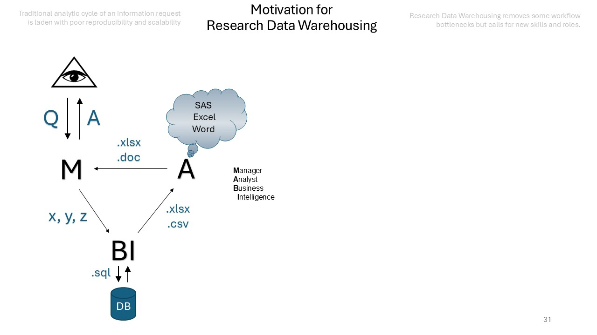
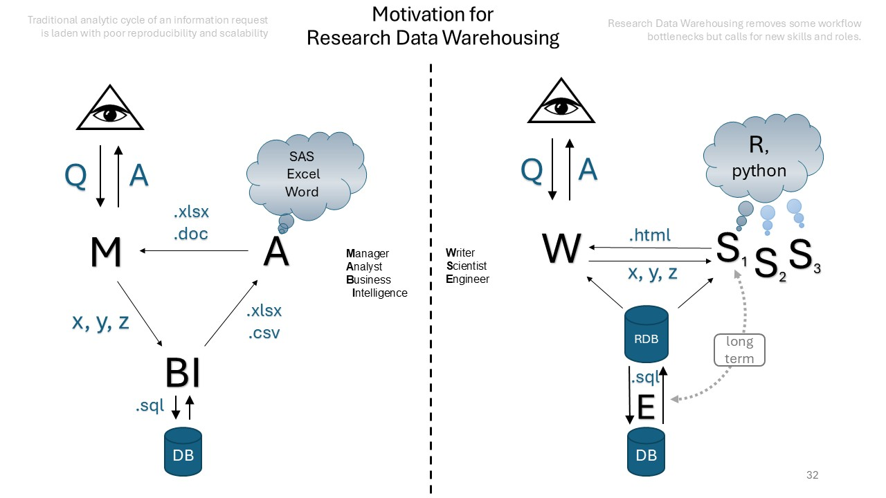
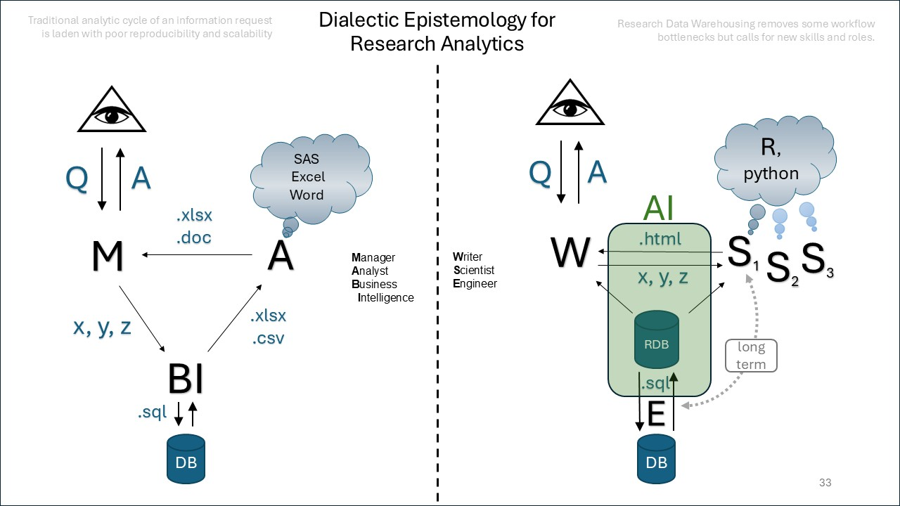
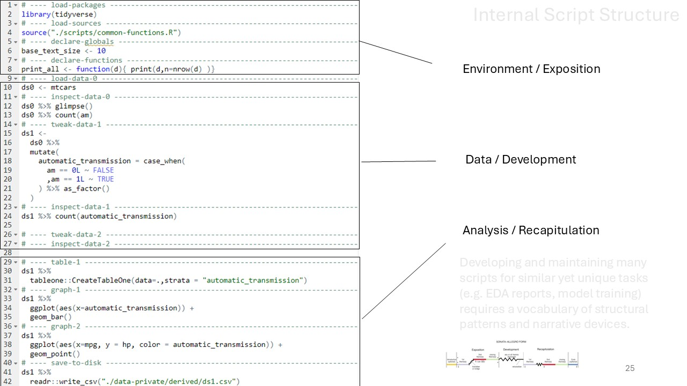
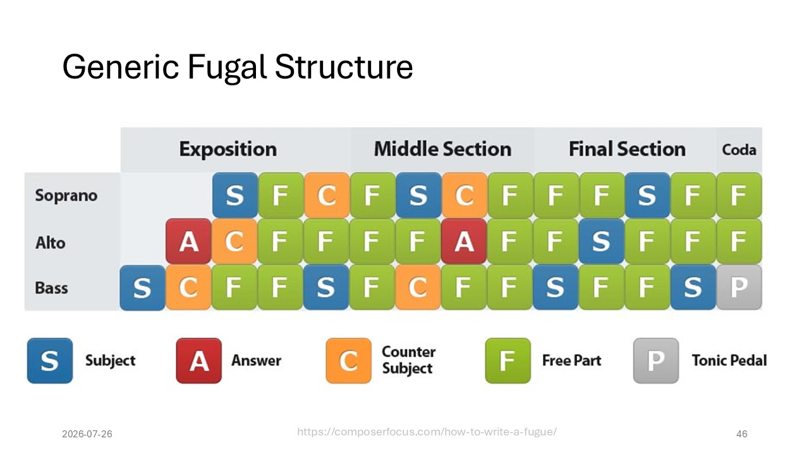
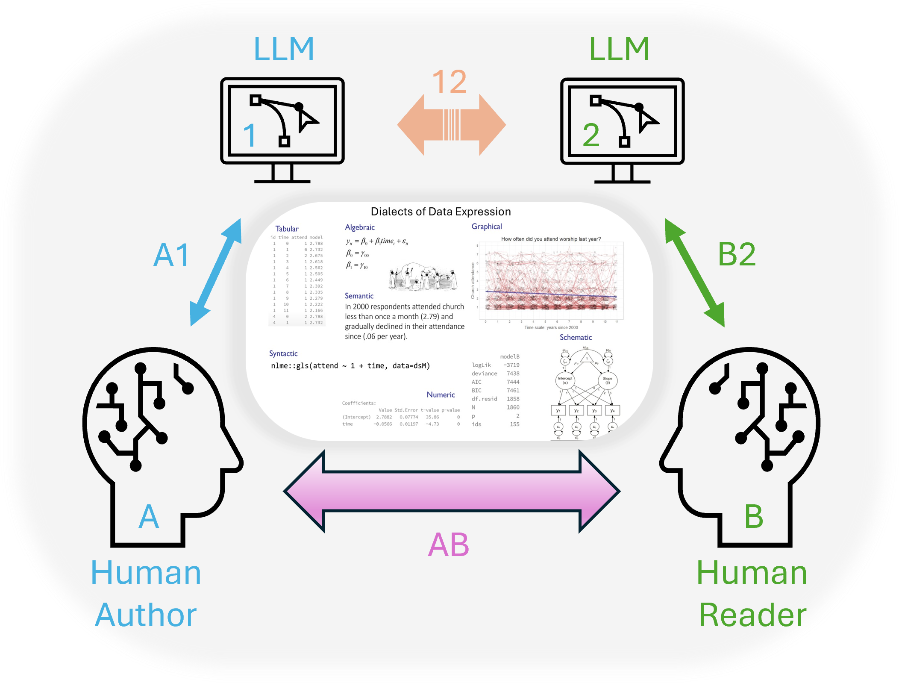

AI for Data Science Teams
Rethinking Collaboration in Reproducible Analytics
2026-09-09
(A) About the Audience
- those who need to analyse data to answer research questions
- those who need to reproduce their analytic solutions
- analysts who learned to code | coders who learned to analyze
(A1) About the Author
The first principle I propose is that our Mission, as users and creators of software for data analysis, is to enable the best and most thorough exploration of data possible.
Exploration is our mission; we and those who use our software want to find new paths to understand the data and the underlying processes.
This is the second principle: the computations and the software for data analysis should be trustworthy: they should do what they claim, and be seen to do so.
(A2) Data Analysis as Software
(A3) Reproducible Research
(B) Data Science is a Team Sport
What is the rulebook? How do we collaborate and teamwork in reproducible research?

(B1) Critique of the Standard Model
Warehousing data for research removes some bottlenecks but calls for new skills and roles.

(B2) Data Science in the Age of Agentic AI
Unignorable disruption. What are your examples? Wins? Wishes?

(C) Scientific Reporting
Three territories of the reporting workflow, each solving a distinct problem.
| Manipulation | Analysis | Frontend |
|---|---|---|
Raw data arrives in the shape of its source, not of our question; ./manipulation is where we reshape it and earn a trustworthy rectangle. |
Data does not speak on its own; ./analysis is where we compose and catalogue the artifacts created during interrogation. |
Some reports will never face external readers; ./_frontend-N is where we decide what to show, to whom, and how. |
(C1) Agent Harnesses
Process in each territory is conducted by a dedicated orchestra
Pipeline Orchestra
Engineering: raw data → trustworthy rectangle
Agent @pipeline-engineer
Writes to manipulation/
Flow source → ferry → ellis → served
Governs transport, transformation, and validation of incoming data
Accountability INPUT-manifest records what arrived; CACHE-manifest records what is served
Composing Orchestra
Reporting: clean data → analytical artifact
Agent @report-composer
Writes to analysis/
Flow contract → .R laboratory → .qmd publication
Governs monothematic engagement: one question, one folder, one artifact family
Accountability report-contract anchors scope; artifacts are numbered and inventoried
Publishing Orchestra
Publishing: existing artifacts → curated site
Agents @interviewer + @writer
Writes to _frontend-N/
Flow RAW → EDITED (content/) → PRINTED (_site/)
Governs editorial selection, audience register, and protocol fidelity
Accountability TRANSFORM_LOG records every change; fidelity report is the gate
(C2) Examples
Three harnesses in the wild — each one a repository you can open, read, and re-run.
caseload-forecast-demo — a forecasting workflow published as a browsable site, showing how a projection is built, checked, and explained.
absent-from-chronic — a full research engagement, from raw survey files to modelled findings, with every pipeline and report step on display.
quick-start-template — the scaffold the other two grew from, so a new project starts with the harness already in place.
(D) Closing thoughts
As we approach designing harnesses for scientific reporting, let us consider principles that could/should guide our thinking.
D1 The harness we build is an expression of the objectives we perceive.
D2 Agent exists to help you pay attention, to guide your focus.
D3 Knowledge is a conversation about data.
(D1) Reflection and Expression
D1 The harness we build is an expression of the objectives we perceive
Reflection — skills and templates will be shaped by our mental models and cognitive habits, intended or not
Expression — skills and templates should therefore be built to express opinions, not merely to execute tasks


Generic fugal structure — composerfocus.com
(D2) Focus and Learning
D2 Agent exists to help you pay attention, to guide your focus.
Ramifications of this principle for harness design:
- The shape of the harness is meant for humans
- Human learning is agent’s success criterion
Knowledge is a conversation
The New Model of Communication

Varieties of Analytic Experience
Lies that helps us see the truth


Andriy Koval | AI for Data Science Teams | Public Safety and Emergency Services | 2026-09-09